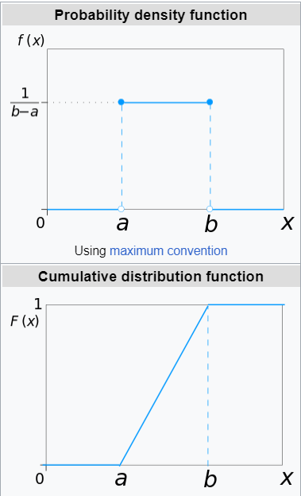
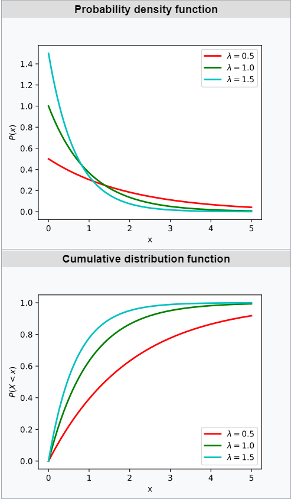
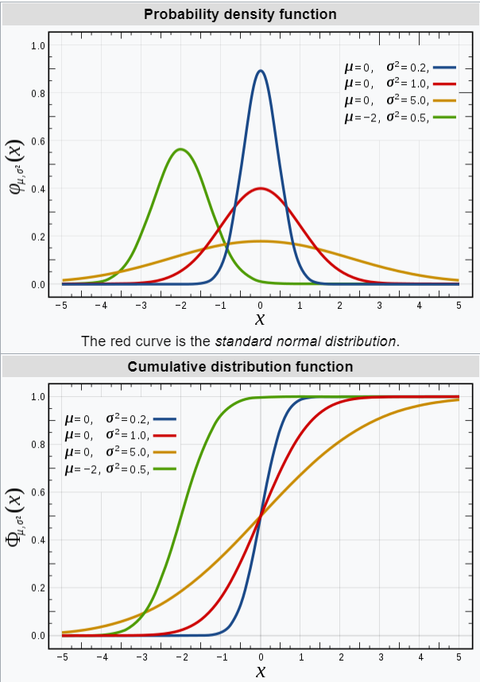

Определение: Пусть \((\Omega, \mathcal{F}, P)\) – вероятностное пространство и \(\xi\) – случайная величина на нем (измеримая функция).
Функция распределения случайной величины \(\xi\) – это \(F_{\xi}(x) = P\{\xi \leqslant x\}, \,\,\,\, \forall x \in \mathbb{R}\) (корректно определена, так как такое множество является событием по простейшим свойствам)
Утверждение: (свойсвта функции распределения)
Доказательство:
Определение: Если \(\exists f(x): \,\,\,\, F(x) = \displaystyle\int\limits_{-\infty}^x f(t)dt\), то \(F(x)\) абсолютно непрерывна, а \(f(t)\) – плотность распределения.
| Дискретные | Абсолютно непрерывные | Сингулярные |
|---|---|---|
| \(\xi = \displaystyle \sum_{k = 1}^{\infty}x_k \cdot I_{A_k}\) | \(\exists f(x): \,\,\,\, F(x) = \displaystyle\int\limits_{-\infty}^x f(t)dt\), в таком случае \(f(t)\) – плотность распределения. | \(F(x)\) непрерывна, но множество точек роста имеет Лебегову меру ноль. |
| \(\Omega = \bigsqcup_{k = 1}^{\infty}A_k\) | Свойства плотности: | Пример: канторова лестница |
| 1. \(f(x) \geqslant 0\) | ||
| 2. \(\displaystyle\int\limits_{-\infty}^{+\infty} f(t)dt = 1\) | ||
| 3. Если \(\exists f(x)\), то \(f(x) = F'(x)\) |
\(\xi = U[a, b]\)
\[f_{\xi}(x) = \begin{cases} \frac1{b - a}, \,\,\,\, x\in [a, b]\\ 0, \,\,\,\, x\not\in [a, b] \end{cases}\]
\[F_{\xi}(x) = \begin{cases} 0, \,\,\,\, x < a\\ \frac{x - a}{b - a}, \,\,\,\, x \in [a, b]\\ 1, \,\,\,\, x > b \end{cases}\]

\[f_{\xi}(x) = \begin{cases} \alpha\cdot e^{- \alpha x}, \,\,\,\, x > 0\\ 0, \,\,\,\, x < 0 \end{cases}\]
\[F_{\xi}(x) = \begin{cases} 0, \,\,\,\, x < 0\\ 1 - e^{- \alpha x}, \,\,\,\, x > 0 \end{cases}\]

\[\xi = \mathcal{N}(\mu, \sigma^2)\]
\[f_{\xi}(x) = \frac1{\sqrt{2\pi}\cdot \sigma} e^{-\frac{(x - \mu)^2}{2\cdot \sigma^2}}\]
\[F_{\xi}(x) = \Phi_{\mu, \sigma^2}(x)\]
(не считается, см. таблицы)

Доказательство:
\[F_{\xi}(x) = \begin{cases} 0, \,\,\,\, x < a\\ p_a, \,\,\,\, a \leqslant x < a + 1\\ p_a\cdot p_{a + 1}, \,\,\,\, a + 1 \leqslant x < a + 2\\ \vdots\\ p_a\cdot\ldots\cdot p_b, \,\,\,\, b - 1 \leqslant x < b + 1\\ 1, \,\,\,\, x > b + 1 \end{cases}\]
Доказательство:
\(P(\xi \leqslant x) = F_{\xi}(x)\)
\(P(\xi > x) = 1 - F_{\xi}(x)\)
Доказательство:
\(w_{F_{\xi}}(x) = \inf_{[a, b] = I \ni x}(\sup_{I}F_{\xi}(x) - \inf_{I} F_{\xi}(x)) = P(\{\xi = a\}) \,\,\,\,\blacksquare\)
Доказательство: см. задачу (как жаль, что я ее не записала)
Доказательство:
\(P\{\xi \geqslant t + s| \,\,\,\, \xi \geqslant s\} = \frac{P(\{\xi \geqslant t + s\})}{P(\{\xi \geqslant s\})} = \frac{e^{- \alpha (t + s)}}{e^{- \alpha s}} = e^{- \alpha t}\)